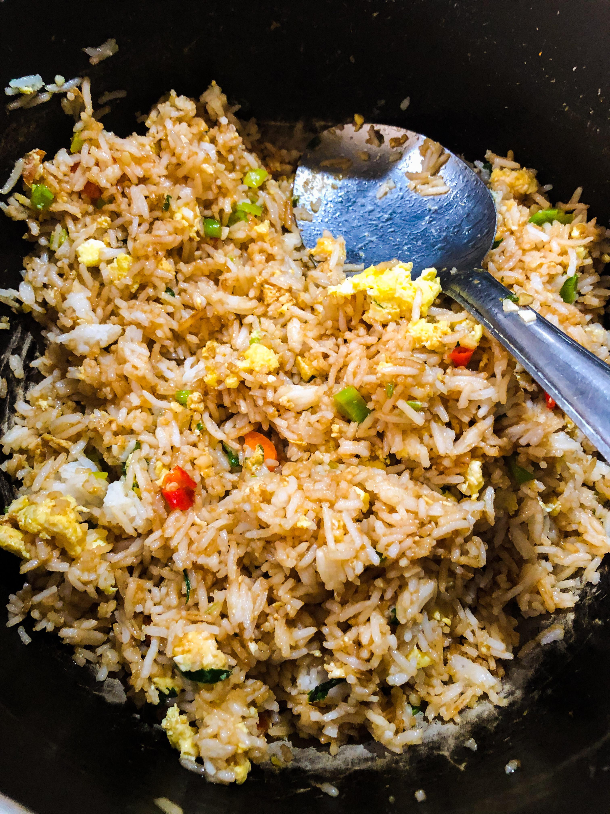

Egg Fried Rice

Yields 6 servings
Ingredients:
- 1/4 cup oyster sauce
- 1 tbsp soy sauce
- 2 tbsp unsalted butter
- 3 large eggs
- 1 tbsp canola oil
- 1 large red, yellow, or orange bell pepper cut into 1/4 in dice (about 1 1/4 cups)
- 1 bag frozen peas and carrots, thawed
- 1 cup frozen shelled edamame, thawed (optional)
- 2 cloves garlic, minced
- 2 1/2 cups COLD cooked brown rice (break up large clumps with your fingers)
- 1/2 cup chopped green onions (about 3 medium) for topping
- Red pepper flakes, sriracha, or hot sauce of choice
Steps:
- In a small bowl, stir together the oyster sauce and soy sauce, and set aside. Grab a small bowl and a large, flexible rubber spatula, and keep both handy.
- Heat a 12 inch non stick skillet over medium heat until hot, about 2 minutes. Add 1/2 tablespoons of butter and swirl to coat the bottom of the pan. Add the egs, and cook without stirring until they barely start to set, about 20 seconds. With your spatula, scramble and break the eggs into little, bite-sized pieces. Continue to cook, stirring constantly, until eggs are just cooked through but not yet browned- about 1 additional minute. Transfer eggs to a small bowl and set aside.
- Return the skillet to the heat, and increase the heat to high. Let the skillet warm until it is hot, about 1 minute. Add thee canola oil, swirl to coat, and add the diced bell pepper and cook until tender, about 4 minutes.
- Add the remaining 1 1/2 tablespoons of butter, peas and carrots, and edamame. Cook, stirring constantly, for 30 seconds. Stir in the garlic and cook until fragrant, about 30 seconds (do not let the garlic burn)
- Add the brown rice and the oyster-soy sauce mixture. Continue cooking, stirring constantly and breaking up any remaining rice clumps, until the mixture is heated through, about 3 minutes.
- Add the reserved eggs and green onions. Cook and stir until the mixture is completely heated through, about 1 minute more.
Return to main page